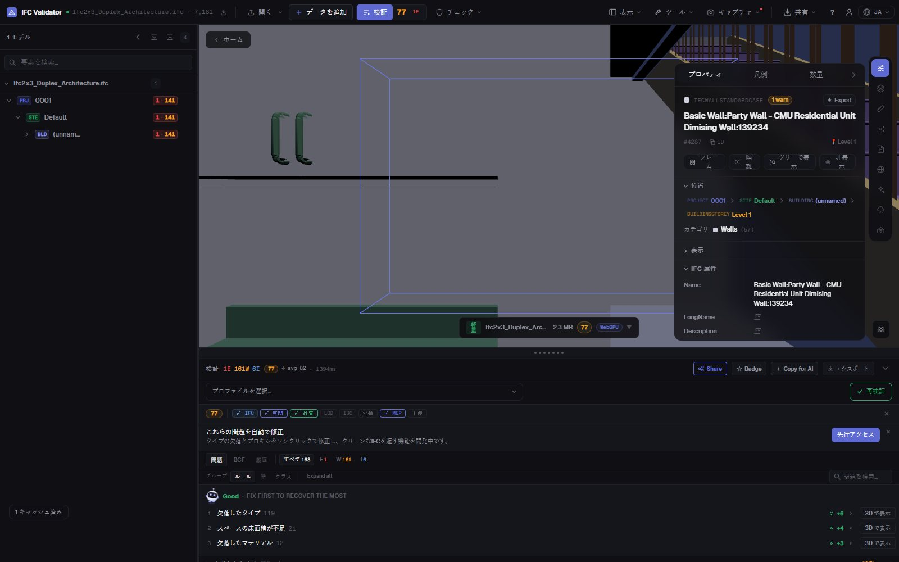
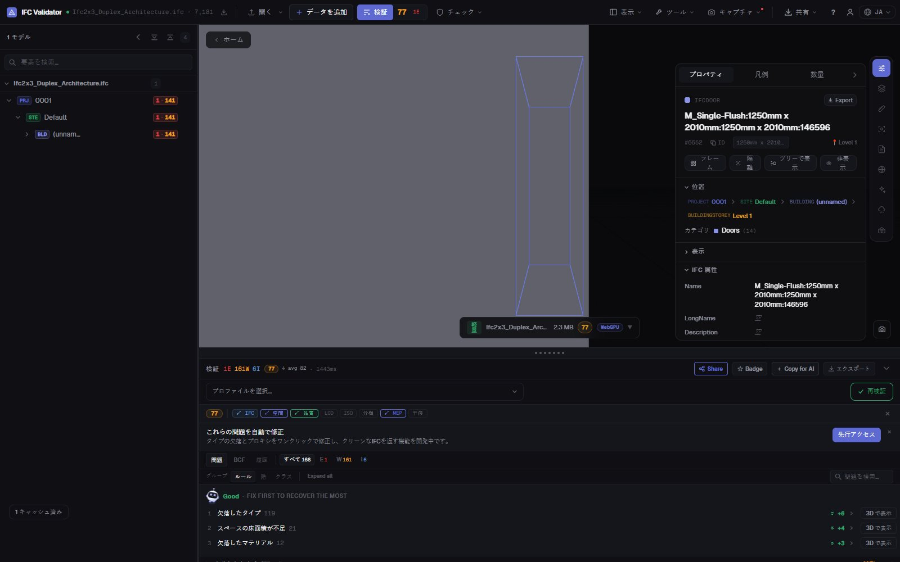

無料 IFC エディタ
ブラウザでオンライン編集
IFC ファイルを開き、要素を選んで誤りを直します：名前、LongName、プロパティ値、所属する階。すべての変更は元に戻せ、結果は BIM ソフトで再び開ける標準 IFC として書き出せます。ファイルはお使いのコンピュータから出ません。
IFC ファイルを編集 — 無料 →アカウント不要 · アップロードなし · ブラウザで動作 · 無料

できること
Revit や ArchiCAD、ライセンスなしで IFC を編集
本来は作成者に差し戻す修正を、すばやく、元に戻せる形で、本物の IFC として保存します。
要素の名前変更
任意の要素の Name と LongName を変更、またはパターン（{class}、{storey}、{n}）で重複・空の名前を一括変更。
プロパティ値の編集
要素のプロパティセットに既にあるプロパティの値を変更（Pset_WallCommon、独自 Pset など）。
GUID の修正
重複・不正な GlobalId をワンクリックで再生成——最も多い書き出しエラーです。
階の付け替え
誤った階で書き出された要素を別の空間コンテナに付け替えます。
すべて元に戻せる
すべての変更は元に戻す／やり直しができるコマンドで、書き出すまで元のファイルは変更されません。
IFC または GLB で書き出し
編集したモデルを IFC（元と同じスキーマ）、または Web や AR 向けの GLB でダウンロード。
スクリーンショット

FAQ
よくある質問
無料のオンライン IFC エディタはありますか？
はい。IFC Viewer Online は商用を含むあらゆる用途で無料です。ページを開いて .ifc をドロップすればブラウザで編集できます。ファイルは WebAssembly でローカルに読み込まれるため、インストールもアカウントもアップロードも不要です。
IFC ファイルの何を変更できますか？
要素名（Name、LongName）、既存プロパティの値、GlobalId、要素が属する空間コンテナ。多数の要素の一括名前変更もできます。モデリングツールではないため、形状は編集しません。
編集した IFC は Revit、ArchiCAD、Solibri で開けますか？
はい。書き出しは開いたファイルと同じスキーマ（IFC2x3、IFC4、IFC4x3）の標準 IFC に変更を反映して書き出すため、元のファイルを読めるソフトなら読めます。
モデルはどこかにアップロードされますか？
いいえ。読み込み・編集・書き出しはすべてブラウザ内で行われます。DevTools でファイルを含むリクエストがないことを確認できます。NDA 案件でも使え、読み込み後はオフラインでも動作します。
編集後にモデルをチェックできますか？
はい。同じアプリが 44 の品質ルールでチェックし 0〜100 の Health Score を表示するので、修正後にスコアが上がるのを確認できます。